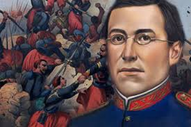
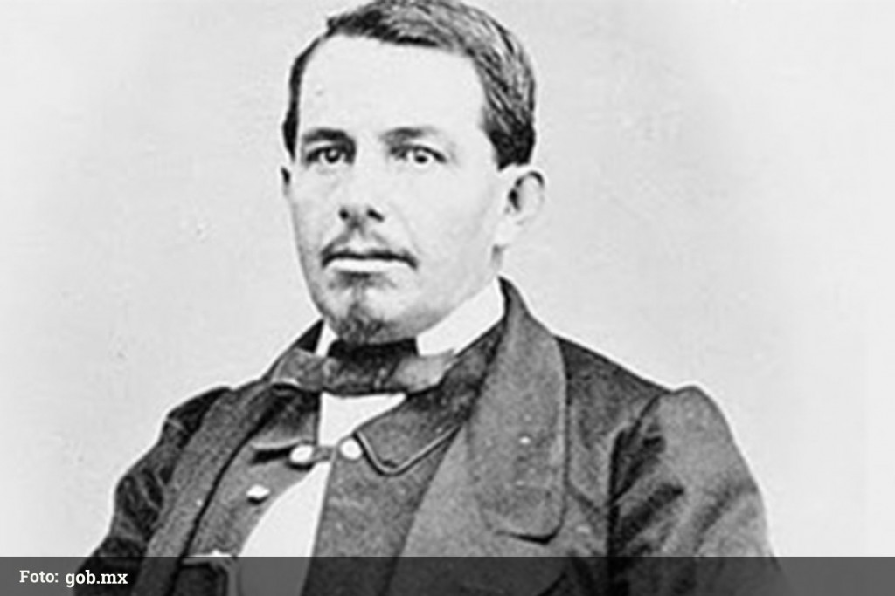

La Batalla de Atlixco tuvo lugar el 4 de mayo de 1862 en las inmediaciones de la Hacienda de las Traperas en Atlixco en el estado de Puebla, México, entre elementos del ejército mexicano de la república, al mando de los generales Antonio Carvajal y Tomás O'Horan contra las tropas al servicio del Segundo Imperio Mexicano comandadas por el general José María Cobos y de Leonardo Márquez, compuesta de soldados conservadores mexicanos en apoyo de envío de refuerzos para llevar a cabo la Batalla de Puebla, durante la Segunda Intervención Francesa en México.1
Esta batalla culminó con una victoria republicana y debido a esto el grupo conservador de Márquez no pudo lograr su objetivo de auxiliar a las tropas francesas del Conde de Lorencez en la batalla de Puebla.

Actualmente es una batalla tan reconocida en nuestro país

A principios de 1862, México fue invadido por los franceses. Unos meses antes, en junio de 1861, el Congreso mexicano – a iniciativa del Presidente Benito Juárez – había declarado la suspensión por un lapso de dos años del pago de la deuda internacional, debido a que la economía del país estaba prácticamente en bancarrota a raíz de la Guerra de Reforma (1857-1860)
Aunque Inglaterra, España y Francia protestaron contra la medida, los dos primeros llegaron a un acuerdo con los diplomáticos mexicanos. En cambio, Napoleón III, gobernante de Francia, vio en ésta, la oportunidad de extender su imperio en América y decidió invadir México. En abril de 1862 (con el apoyo de los conservadores) los franceses emprendieron, desde Córdoba, Veracruz, la campaña militar hacia el centro de la República. La primera batalla importante tuvo lugar en Acultzingo, Veracruz, y el siguiente lugar en la ruta a la capital era la ciudad de Puebla.
El general Charles Ferdinand Latrille, comandante de las tropas francesas, seguro de poder derrotar fácilmente al Ejército mexicano y dominar al país escribió al Ministro de Guerra de Francia: “Tenemos sobre los mexicanos tal superioridad de raza, organización, disciplina, moralidad y elevación de sentimientos, que os ruego digáis al emperador que a partir de este momento y a la cabeza de seis mil soldados, soy el amo de México”. El Ejército francés contaba con soldados experimentados y bien aprovisionados, considerados los mejores del mundo.
Ante la amenaza de una intervención armada, el Presidente Juárez dispuso la organización de las Guardias Nacionales y del Cuerpo del Ejército de Oriente, comandado entonces por el General Ignacio Zaragoza, quien el 5 de mayo de 1862 se enfrentó a los franceses.
A pesar de la inferioridad numérica, del poco adestramiento y el mal equipamiento, el triunfo mexicano fue absoluto; Zaragoza con una buena estrategia y aprovechando lo que tenía, obligó a los franceses a replegarse. Su experiencia fue determinante (muy joven había combatido contra la Invasión norteamericana y después se distinguió en la Guerra de Reforma como miembro del Ejército liberal) pues supo aprovechar la disposición de los fuertes de Loreto y Guadalupe, que defendían la ciudad de Puebla. En esta batalla se destacó la participación del contingente de indígenas zacapoaxtlas entre las tropas mexicanas, quienes convencidos de que la independencia y soberanía de México se encontraban en riesgo, tomaron las armas también.
Desde el punto de vista estratégico, la Batalla de Puebla fue un importante triunfo para México, pues retrasó durante un año el avance del invasor y permitió al gobierno mexicano preparar la defensa de la ciudad.
En marzo de 1863, casi un año después, los franceses tomaron la ciudad de Puebla y en unos cuantos meses impusieron su dominio militar sobre el resto del país; así se estableció el Segundo Imperio Mexicano.
Maximiliano de Habsburgo, archiduque de Austria, llegó a México en mayo del mismo año para convertirse en su emperador; su reinado duró tres años, hasta que fue derrotado y fusilado por los liberales, al mando de Benito Juárez.

Actualmente es una batalla tan reconocida en nuestro país y en el mundo
Debido principalmente a la cantidad de deudas, , Inglaterra y España subscribieron el Convenio de Londres, por el cual se comprometieron a intervenir por el uso de la fuerza en México para reclamar sus derechos como acreedores, mientras tanto el Presidente Benito Juárez declaró suspendidos los compromisos adquiridos y aplazó pagar la deuda a las naciones europeas. Tras desembarcar en Veracruz, España e Inglaterra aceptaron las explicaciones mexicanas dadas en los Tratados de La Soledad, los cuales tenían como fundamento, el respeto a la soberanía territorial, el reconocimiento de las naciones acreedoras al Estado Mexicano, la entrada al terreno de las negociaciones para llegar a acuerdos en común, que beneficiaría tanto a la República Mexicana, como a los intereses de las potencias invasoras, y por último, se permitiría que los soldados de los tres países se establecieran en las ciudades mexicanas de Orizaba, Córdoba y Tehuacán durante las negociaciones, debido a lo malsano del clima imperante en el puerto de Veracruz; en caso contrario, los soldados de las tres potencias se retirarían a las costas de Veracruz para así comenzar las hostilidades.

El 16 de abril de 1862, el General Juan Prim, Jefe de la Fuerzas Españolas escribía a Ignacio Zaragoza, que no habiéndose puesto de acuerdo los representantes de los tres países, solo los españoles e ingleses aceptarían los términos que Benito Juárez propusiese en los Tratados de la Soledad, y se reembarcarían de regreso a casa. También puso en alerta a Zaragoza que los franceses no aceptaron esto, pues vieron fallas en este decreto, y que exigían pronto el pago, pues se veían amenazados por los prusianos y no tenían con que solventar una guerra, por lo cual comenzarían una invasión hacia la capital de la República, supuestamente para poder obtener el pago de la deuda.

Fuertes de Loreto y Guadalupe
Los fuertes de Loreto y Guadalupe son unas antiguas edificaciones militares que se encuentran en la ciudad de Puebla. Originalmente se trataba de capillas construidas en lo alto de un cerro Acueyametepec, que fueron reconstituidas a principios del siglo XIX como fortificaciones con finalidades militares. Sirvieron como escenario principal tanto en la batalla como en el sitio de Puebla, durante la Segunda Intervención Francesa en México. Declarados como patrimonio histórico de México, actualmente albergan museos de sitio.
MUSEO INTERACTIVO DE LA BATALLA DEL 5 DE MAYO
Una de las más grandes batallas que ha librado el país tuvo lugar en la ciudad de Puebla, la batalla del 5 de mayo de 1862. En la zona de los fuertes, en el mismo escenario del pasado, se ubica el museo interactivo.
El recorrido por el museo utiliza la tecnología más puntera para narrar las acciones militares y la biografía de héroes nacionales como Negrete, Díaz y Zaragoza. Pantallas táctiles, proyecciones en 3-D y contenidos interactivos descargables en dispositivos ofrecen una experiencia única al visitante.

HÉROES PRINCIPALES:
GENERAL IGNACIO ZARAGOZA
Encabezó la defensa mexicana frente a la ofensiva francesa encabezada por Carlos Latrille, mejor conocido como el Conde de Lorencez.
Nacido en el entonces departamento mexicano de Texas, siempre se consideró él mismo un neoleonés por adopción.
Enlistado como soldado en las Guardias Nacionales del estado, su carrera ascendió durante la Guerra de Reforma hasta convertirse en General del Ejército Mexicano y, con el triunfo de los liberales, en Ministro de Guerra del Presidente Benito Juárez.
Atrincherado en Puebla para hacerle frente al ejército francés, siempre supo dar ímpetu y valor a sus hombres. México era una incipiente realidad como nación soberana, y lo recordó a sus tropas el 4 de mayo de 1862, en la víspera de la batalla, cuando reuniéndolos en la Plaza de San José.

GENERAL MIGUEL NEGRETE
Es considerado por algunos historiadores como el verdadero héroe de la Batalla de Puebla. Durante la Guerra de Reforma participó del lado de los conservadores. Sin embargo, cuando la nación se vio invadida, se acogió a la amnistía que el Presidente Benito Juárez extendió a todos sus antiguos enemigos, incorporándose así a las filas republicanas.
El 5 de Mayo estuvo al mando de las fuerzas que defendían el Cerro de Guadalupe, recibiendo el peso del principal asalto francés.
En el primer ataque, cuando los zuavos confiados ascendían la pendiente, los mexicanos aguardaron hasta que el General Negrete levantó su gorra como señal para hacer fuego.

GENERAL PORFIRIO DIAZ
Militar valiente de origen oaxaqueño, Díaz llenó su nombre de gloria con una destacada participación durante el 5 de Mayo.
El 5 de mayo, el político oaxaqueño y otros militares intervinieron en la Batalla de Puebla, Díaz defendió el ala izquierda de la ciudad, y rebatió en dos ocasiones el ataque francés.
En un principio, retirándose en buen orden, los marinos franceses pronto se vieron huyendo en pánico perseguidos por los Lanceros de Oaxaca. Tan precipitada fue su huida, que muchos galos tuvieron que arrojar sus mochilas para poder correr más aprisa de la caballería mexicana.
Jesús González Ortega y Porfirio Díaz se dieron a la tarea de perseguirlos, hasta que Zaragoza se los impidió.
GENERAL FELIPE BERRIOZABAL
Político, ingeniero, Ministro de Guerra y Marina; General de división. Sirvió de 1849 hasta el 1900 con lealtad en el Ejército mexicano, Felipe Berriozábal participó en la Primera intervención estadounidense en México, la Guerra de Reforma y la Segunda Intervención Francesa en México y formó parte de los gobiernos de Benito Juárez y Porfirio Díaz. Nacido en Zacatecas, Zacatecas, en 1827, realizó como ingeniero el proyecto hidráulico de canalización del Río Lerma. Durante la Revolución de Ayutla participó con los liberales bajo las órdenes del general Plutarco González. Durante la Guerra de Reforma, el general Santos Degollado lo nombró coronel de caballería auxiliar y más tarde ascendió a general de brigada.


 1
1 3
3 8
8